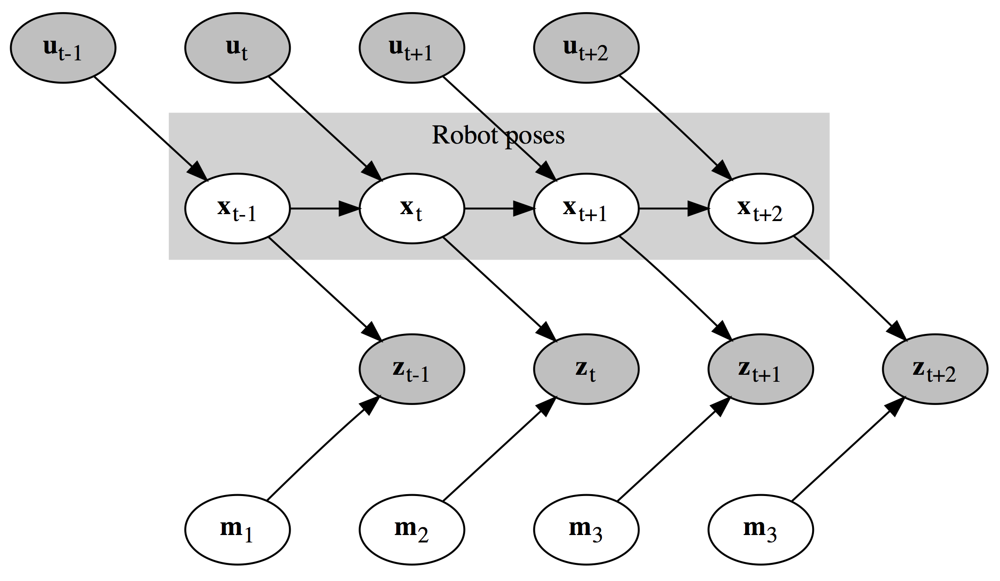

Wouter Bulten
Supervisors:
Anne van Rossum (DoBots & Almende)
& Pim Haselager (Donders Institute)
Part of a Master of Science Thesis in Artificial Intelligence
Radboud University, Nijmegen
We do not know where users are?
We do not kwow where are devices are?
We do not know when users and devices are close?
Given an unknown building with (smart) devices, can we localise these devices and the users that walk around inside the building?
Without prior configuration (e.g. building layouts);
Decentralised (no main hub)
using limited hardware;
and all computations done in real time.
Take a well-known technique from robotics, replace the robot with a human and use that to localise humans and devices inside buildings.
In the ‘Internet of Things’ devices are connected using some wireless method.
In our case: Bluetooth Low Energy (BLE)
→ Received Signal Strength Indicator (RSSI)
Log-distance path loss model:
Most users carry a smartphone.
Utilise accelerometer and compass to predict motion.
So how do we
In robotics simultaneously building a map and localising the robot on that map is a common problem.
Simulteneous Localisation and Mapping (SLAM)
Given robot's controls and sensor readings what is the current location and map of the environment?
FastSLAM is an efficient online SLAM algorithm
Given a robot's path ($x_t$) landmarks ($m_k$) are independent of each other
Two main techniques: Particle Filters and Extended Kalman Filters
Robot → Human
Control → Heading & Number of steps
Sensor readings → RSSI measurements
Focus on robot's path → Focus on device locations
Fully written in Javascript
(including pedometer, SLAM algorithm and particle filters and visualisations)
ECMAScript 6/2015
(with BabelJS as transpiler)
Runs on almost any mobile device
(Tested on Android & iOS)
Open Source
(Released under the LGPL GNU v3 license)
(See: github.com/wouterbulten/slacjs)
Map fusing
Using an adapted range-only version of FastSLAM from robotics, we replaced the robot with a human and use that to localise both humans and devices inside buildings.